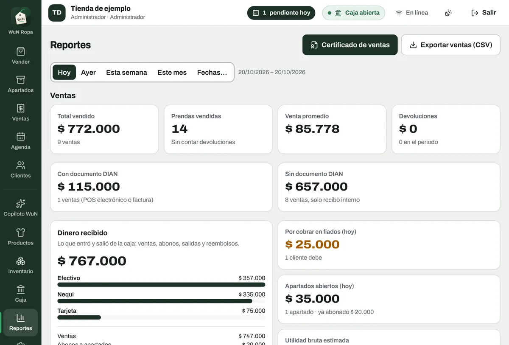

Automatización con IA
Agentes y flujos que hacen el trabajo repetitivo: responder, agendar, registrar, conciliar y avisar.
- Bots de WhatsApp y llamadas
- Tareas programadas con revisión humana
WuN · What U Need · Bucaramanga
Buscamos la tecnología que tu proceso necesita, la entendemos y la ponemos a trabajar: software a la medida, automatización con inteligencia artificial y sistemas que tu equipo sí usa.
No vendemos herramientas sueltas: entendemos el proceso, lo diseñamos con tu equipo y lo dejamos funcionando, con soporte y seguridad.
Agentes y flujos que hacen el trabajo repetitivo: responder, agendar, registrar, conciliar y avisar.
Sistemas propios que reemplazan hojas de cálculo y programas que ya no te sirven, pensados para quien los usa.
Caja, inventario, ventas, fiados y reportes que funcionan aunque se vaya el internet.
Contenido, videos, publicidad y campañas medibles para que tu marca venda más.
Conectamos tus sistemas, correo y WhatsApp, y te damos tableros para decidir con datos reales.
Trámites en línea sobre una base común, integrados a GOV.CO, y seguimiento de obras con datos públicos.
Como pasó con WuN Shop, que empezó en una tienda de ropa y hoy sirve a cualquier tipo de negocio: un núcleo común, y encima lo que cada sector necesita.
Sistemas de caja e inventario, páginas web, marketing y automatizaciones para negocios que quieren crecer.
Agendamiento sin filas, bots que atienden pacientes y sistemas propios de gestión, con los datos protegidos.
Digitalización de trámites y seguimiento de obras, con el código a nombre de la entidad y transferencia a su equipo.
Pantallas reales de WuN para negocios, con datos de ejemplo.


Sin nombres de clientes hasta tener su autorización. Lo que importa es el problema y cómo lo resolvimos.
Caja, inventario por talla y reportes diarios con WuN Shop.
En usoUn solo sistema para caja, meseros, cocina y domicilios.
En implementaciónBots de agendamiento y un sistema propio que une sus áreas.
En desarrolloMenú nuevo, imágenes y piezas con IA para redes.
En cursoAgentes de IA que trabajan supervisados por personas: más rápido y con control.
Entendemos tu proceso y lo que de verdad te duele. Gratis.
Qué vamos a hacer, en cuánto tiempo y cuánto cuesta, por escrito.
Avances cada semana para que veas y ajustes antes de terminar.
Capacitación, documentación y acompañamiento después de entregar.
Un equipo de Bucaramanga que crece por etapas, según cada proyecto.
Fundador y director de WuN
Estudiante de Ingeniería de Inteligencia Artificial (UDES). Producto, diseño y automatización de procesos con IA para negocios, salud y gobierno.
Socio y líder técnico de WuN Gobierno
Más de tres años digitalizando trámites ciudadanos de servicios públicos. Lidera la arquitectura y la ejecución técnica de los proyectos con entidades públicas.
Lo que puedes exigirnos en cada proyecto.
Cuéntanos y te decimos, sin costo, cómo lo automatizaríamos.